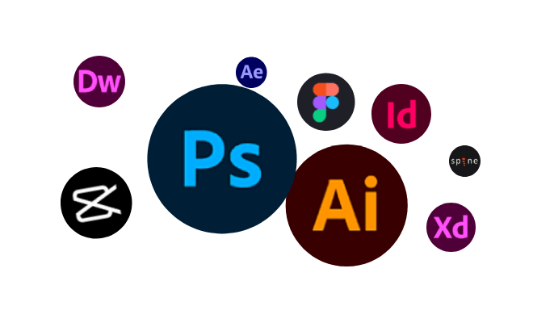

手機按鈕
薛 翊 均
視覺美術設計實務經驗豐富。
包含平面、包裝、網頁、商攝、陳列,以及商品開發管理與行銷企劃與分析..等。
近年的設計工作，主要是遊戲產業中擔任美術主管職務。
並包含平面與影音的設計與管理。
主要負責企業形象規劃，美術設計工作執行與規劃管理；
並提升設計表現,持續行銷素材優化表現。
-

-
Computer design
○ 設計軟體應用
○ 響應式網頁製作
○ 影音素材剪輯
-
General skills
○ 商業攝影
○ 手繪插畫
○ 影音廣告腳本
○ 行銷企劃
-
私立復興商工
廣告設計科 《 影像傳達組》畢業
○ 畢業展作品在校內總評第二名
○ 代表至國父紀念館與新一代設計展參展
-
國立台灣藝術大學
視覺傳達設計學系 畢業
○ 系學會活動組長- 活動企劃以及執行，包含經費募集與支出管理。
-
奇游科技
高級設計師
2017.4-2018.11
○ 美術部門管理指揮
○ 跨部門溝通協調
○ 形象及產品設計規劃執行
○ 影音素材創意指噵
○ 協助行銷素材優化與分析 -
酷玩線上
美術經理
2015.4-2017.1
○ 美術部門管理指揮
○ 跨部門溝通協調
○ 形象及產品設計規劃執行
○ 協助行銷素材優化與分析 -
紅心辣椒
美術設計
2013.7-2015.4
○ 形象視覺規範設計
○ 遊戲網站視覺規劃
○ 網頁製作等事務。 -
東方鴻展
美術組長
2013.1-2013.4
○ 美術部門管理指揮
○ 跨部門溝通協調
○ 形象及產品設計規劃執行 -
信義房屋
設計專員
2008.3-2011.3
○ 集團美術設計工作執行
○ 商品設計開發 / 廠商管理
○ 網頁設計 / 廣告素材製作
○ 店頭櫥窗設計
○ 行銷活動文宣物設計
○ 插畫設計